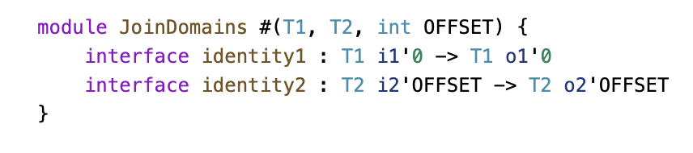
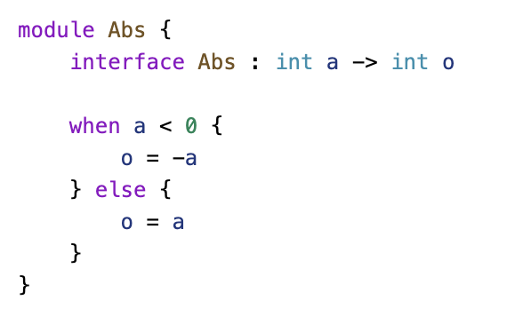
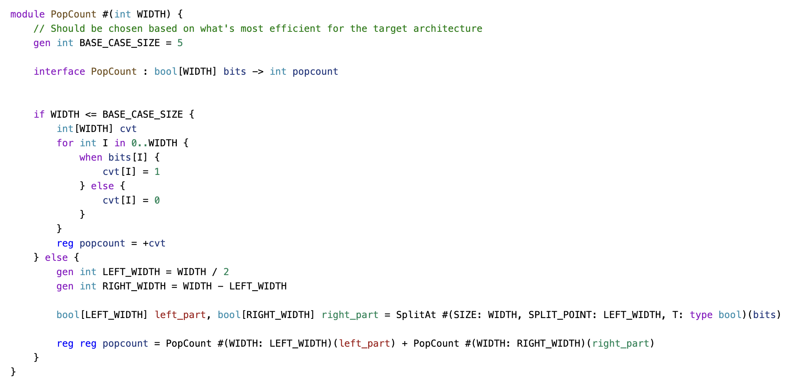
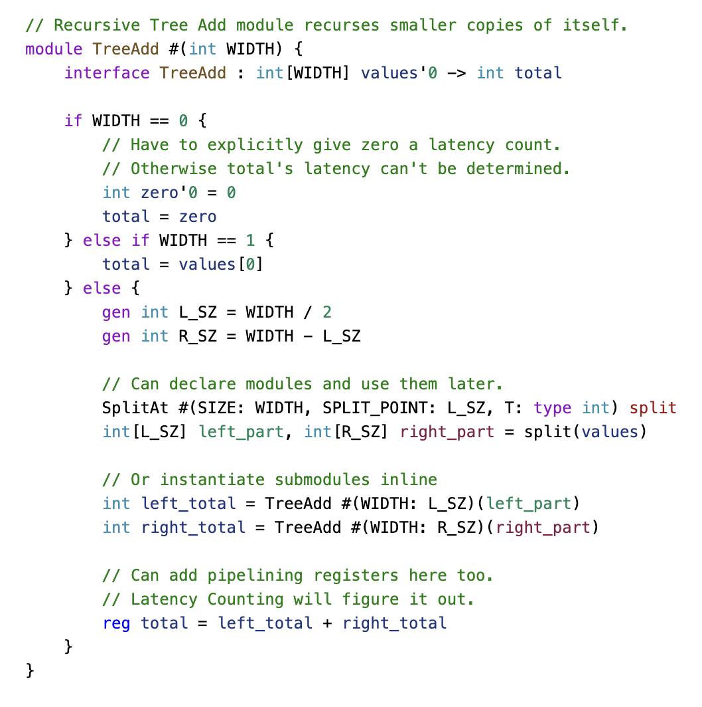
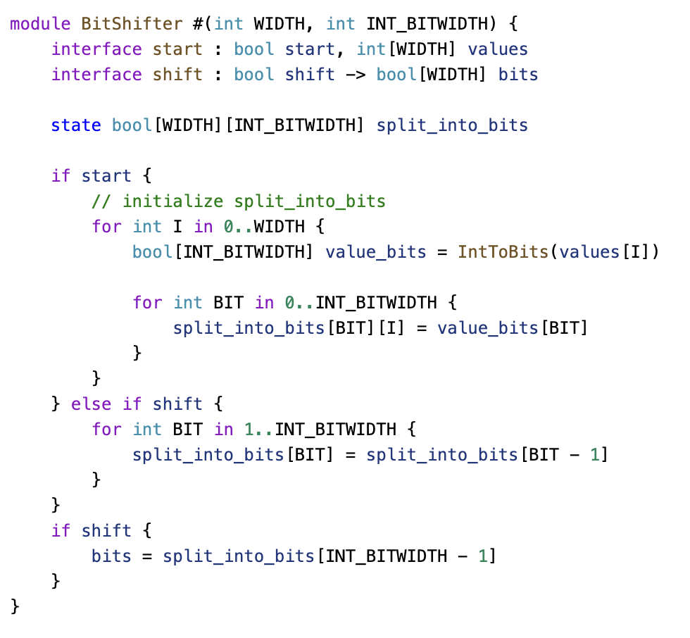
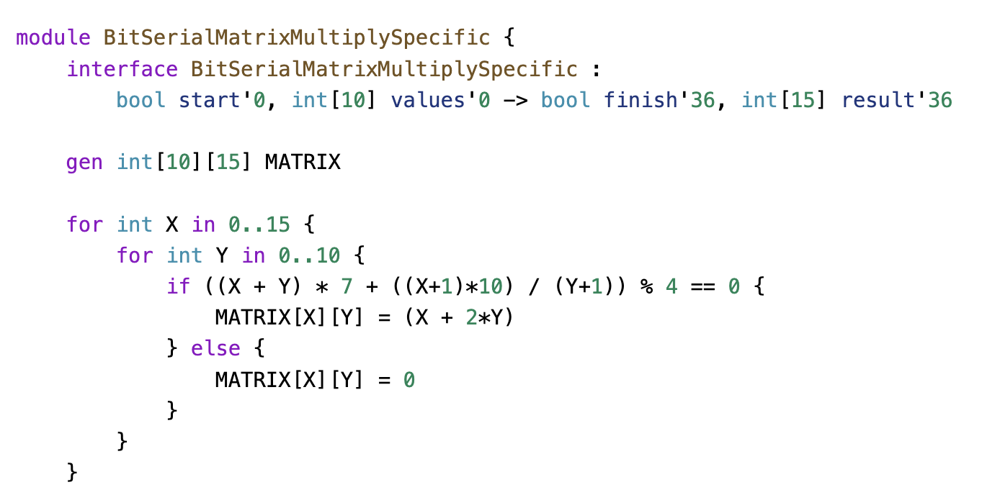

Introduction to the SUS Hardware Design Language
SUS (Synchronous Ultra-Structured) is a new language for hardware design (RTL) similar to Verilog and VHDL, but it focuses on simplifying the development of high-performance FPGA accelerators. Unlike other hardware description languages, SUS does not attempt to hide complexity; instead, it provides a clearer way to manage it.
What is the main purpose of SUS ?
The main purpose of SUS is that, as the programmer, you are in the driver's seat. This means you're responsible for designing the hardware and ensuring every component is built to your specifications. While this places the responsibility on you, it also gives you immense power to ensure the hardware functions and is built exactly as you intend.
Installation
Installation is done through Rust's package manager cargo (cargo installation info).
cargo install sus_compiler
To use the accompanying VSCode Extension for Syntax Highlighting and Code Suggestions (sus-lsp), install SUS Hardware Design Language through the VSCode Extension Explorer, or use the F1 installation command:
ext install LennartVanHirtum.sus-lsp
Typing
1. Abstract Types
int[]
-
Typecheck at Flattening time
-
Only type names and structure
-
LSP Into & suggestions
-
trait bounds
1. Concrete Types
int[256]
-
Typecheck at Instantiation time
-
Type names and concrete values
-
Actually defines wires

In Sus, variables never appear within types, which affects how dependent types work. You can see this in the compiler by hovering over a value—this reveals its abstract type.
For example, in a recursive module like three_add, initially instantiated with size 255, the compiler splits it repeatedly (e.g., 255 → 127 → 63, etc.), showing the concrete types of each instantiation.
Data Types
1. Primitive Types (Built-in Types)
These are the fundamental types in sus:
-
bool→ A single-bit value that can betrue(1) orfalse(0). -
int→ A variable-sized integer (currently implemented as a 32-bit integer). -
float→ A single-precision IEEE 754 32-bit floating-point number.
2.Constants
The language defines several built-in constants:
true→ Represents the boolean value 1.false→ Represents the boolean value 0.sizeof #(T)→ Returns the size of the given type, in bits.
// sizeof #(T: type bool) = 1
// sizeof #(T: type bool[50]) = 50
// sizeof #(T: type int[10][10]) = 3200
clog2 #(int V)→ // Typically used to find the size in bits that the address would need to be to address into a memory of size V.
// Requires V > 0
// clog2 #(V: 15) = 4
// clog2 #(V: 16) = 4
// clog2 #(V: 17) = 5
3. Interfaces & Modules
The language includes built-in modules and interfaces to help with hardware design:
. LatencyOffset #(T, OFFSET)

Delays a signal T by OFFSET clock cycles.
Example: A signal entering this module at cycle 0 will exit at cycle OFFSET.
. CrossDomain #(T)

Handles clock domain crossing by defining in_clk and out_clk.
Example: Used when transferring data between different clock frequencies.
. IntToBits/ BitsToInt


Converts int to(bool[32]) and vice versa.
4. Arrays & Multi-dimensional Types
This language supports arrays, similar to traditional programming languages:
. bool[32] → A bit vector of size 32.
.int[10][10] → A 10×10 array of integers (each intint is 32 bits).
Total size: 10 * 10 * 32 = 3200 bits.
1. Dual-Port Memory
The DualPortMem module provides a simple memory with separate read and write clock domains.
Example: A memory block with separate read and write ports, each in its own domain. Every wire belongs to a domain or remains anonymous. Signals can only cross domains via explicit crossing primitives.

2. FIFO
FIFO Memory with Multiple Domains
In this FIFO design, the latency counting idea doesn’t fully apply because the ready signal on the push side doesn’t directly correlate with the request signal on the pop side. The FIFO operates with two domains: a push domain and a pop domain, each with related signals. It allows three cycles of pipelining slack for the input side and takes two cycles to produce data when requested.
To handle domain crossing, explicit constructs are used to ensure correct data transfer between the domains. The FIFO includes registers for read and write addresses across the latency boundary. Additionally, extra latency registers, like for the subtraction and comparison operations, help manage performance.

3. JoinDomains
Synchronizes two signals across different clock domains with an adjustable offset.

4. Iteration in SUS
The iterator module provides a simple counting loop. It is a state machine for sequential iteration, flexible for various counting ranges.

5. FixedSizeIterator

FixedSizeIterator module is a simple hardware iterator that counts from 0 to UP_TO - 1, based on a start signal.
6. SlowClockGenerator
SlowClockGenerator: Generates a slower clock by counting up to a given period.

7. SplitAt
SplitAt: Splits an array into two parts at a specified index.

8. Abs
Computes the absolute value of an integer.

9. Slice
Extracts a sub-array (slice) from a given array.

10. BitSelect
Outputs a one-hot encoded signal based on a selected index.

11. PopCount

Counts the number of 1s in a binary array using a recursive approach.
12. TreeAdd

Recursively sums an array of integers using a tree-based approach for efficient computation.
SUS through Examples
The SUS language enables a direct translation to a netlist, which is crucial for hardware synthesis. To illustrate this, consider simple examples.
XOR gate

In the SUS language, this module would have two inputs, X1 and X2, and an output Y. In the middle, we may have several intermediary operators and variables that perform necessary computations, ultimately assigning the result to the output Y.
Below the module definition, you'll see how such a module can be instantiated. The instantiation follows a function-call-like syntax, which, when synthesized, translates into corresponding hardware gates in the netlist."
Conditions

In hardware design, it's important to understand that all hardware is always running on a chip; you can't just conditionally enable or disable hardware. The only thing that changes with conditions is whether certain assignments are made. For example, in the given scenario, inputs are checked to see if they are less than zero. If they are, a negation block is used, otherwise, the value is used as-is. However, any additional hardware in the middle will still execute regardless of the conditions, as it's always running at runtime. These are essentially runtime if statements.
Multiple Interfaces


A module is presented here that implements a for-loop as a runtime iterator. This module has two interfaces: a 'start' interface, which initiates the iterator. A value is provided to define the range for iteration. Once the iteration begins, the module also features a 'trigger' interface, which acts like a callback within the hardware. This interface informs the hardware of the current values being iterated through. The implementation below demonstrates the module, including a condition and other necessary components
How to use Multiple Interfaces?

To use it, you would wrap it in an array of values, set up output values, and instantiate an iterator. You can then start iterating from a specific point and use a callback function.
FIZZ-BUZZ Lookup Table using Generative Code

In the end, the generative code is executed and all that results is a lookup table.
Generative Code
In sus, metaprogramming simplifies hardware design by generating repetitive structures efficiently.

For loops don’t create runtime pipelines but directly instantiate hardware, like 600 multipliers and adders.
Sus works on two levels:
Metaprogramming generates hardware structures. Runtime statements define circuit behavior. Within modules, you can use loops, variables, and conditionals. For cross-module generation, templates are used.
Templates
Sus supports templates to handle array slicing and other reusable structures.

At the top, we define type parameters, allowing the template to accept any array of any type (T), such as int, bool, or custom types. Below, we have value parameters, which are part of the module body. These can have default values or be conditionally included based on logic.
To instantiate a template, Sus uses a syntax similar to Rust with :: First, provide value parameters. Then, specify type parameters at the end.
Templates also enable recursive modules, which are essential for trees hardware structures.
Recursive Modules

We have a module tree that takes in a set of numbers and compresses them down to a single sum.
There are two base cases: one where there are zero elements and one where there is a single element. We handle these explicitly.
For the recursive cases, we split the array into two chunks, process each chunk individually (summing their elements), and then combine the results.
Additionally, we can introduce a pipelining stage if needed. The compiler can automatically insert these stages without issues. While adding pipelining stages won’t break the code itself, they might cause build failures, in which case you’ll need to fix the errors flagged by the S compiler.
One key advantage of this approach is that it makes it extremely easy to add pipelining stages wherever necessary.
Registers
In Sus, there are only two types of registers:
State Registers – Essential for core functionality, such as accumulators. Latency Registers – Added only to meet timing constraints by shortening critical paths. Sus treats them separately for code clarity and because latency registers are handled differently.
State Registers

Example Sus code with State Registers:

This module computes the Fibonacci sequence using state registers. It stores the current and previous values, computes the next value, and shifts them forward. These registers are essential for the design's correct operation.
Latency Registers

Example Sus code with Latency Registers:

In a module that raises a value to the 17th power, multiple multipliers are chained together. If the critical path between input and output is too long, latency registers can be added using the reg keyword to improve timing.
The compiler automatically detects parallel branches and inserts extra latency registers to keep all computations synchronized. This is managed through latency counting, where each wire stores an offset value. If one signal has a latency of 0 and another latency of 2, the compiler inserts two latency registers to align them.
FIFO
Multiple Domain

In a FIFO with multiple clock domains, latency counting doesn’t fully apply because there’s no direct one-to-one mapping between push and pop signals. The FIFO operates with separate push and pop domains, each with internally related signals. Here, the push side allows three cycles of pipelining slack, while the FIFO itself takes two cycles to produce data when requested. This separation means that tracking data as it moves through the pipeline requires a different approach than simple latency counting.
Latency cuts

In this FIFO, a domain boundary separates the push and pop sides, requiring explicit domain-crossing constructs to ensure correct latency handling. The FIFO uses a large memory block for storage, with write and read address registers on opposite sides of the boundary. Additional latency registers may be introduced, such as for expensive operations like subtraction and comparison. A latency offset mechanism allows treating signals as if they have an adjusted latency, enabling long-latency feedback loops that would otherwise be impossible.

In the dedin project, domain boundaries frequently occur around FIFOs, making them natural points for handling latency and synchronization. The design follows a hierarchical structure: a small internal loop in the dant kernel, repeated 30 times, with data distributed across these instances, and this entire structure replicated 10 times. While FIFOs are the typical boundary elements, a dual-port memory is used instead of a FIFO in the innermost block, showing that other memory structures can also serve this purpose.
BitSerialMatrix
The bit-serial matrix multiplication is an example where SUS truly shines.
The bit-serial matrix multiplication essentially takes a compile-time matrix, ideally a sparse one, and processes the input data bit by bit for each input vector element. This approach ensures that the multiplications within the matrix involve only multiplications by one or zero, which is far cheaper to implement than full-size multipliers.
Datapath

When designing a new SUS architecture, it's important to start by drawing out how you want the data flow to look. In this case, I've outlined the bit-serial multiplication process. At the top, we have bit shifters that store the input vector and sequentially output bits over 32 cycles, starting from the most significant bit. These bits are then fed into the matrix rows, where multiplications by one or zero take place. The summed results are accumulated and shifted left every cycle, producing the final result after 32 cycles.
Bit Serial Row
n one of these bit-serial rows, we've passed a vector of specific values. Some of these values are zero, and we want to filter them out first. This way, we only sum the values that were not multiplied by zero. Essentially, our goal is to implement this filtering step so that, in the end, we only add the relevant three values together. Here's how it should work.

Bit SerialRow Code

At the top, a Ro block defines the size and weight list as template parameters. The interface is purely combinatorial. The first step is counting all nonzero elements, which is necessary for now since SUS doesn’t support resizable vectors. Once that feature is available, this step will no longer be needed.
A special case occurs when all values are zero, in which case the output is simply zero. Otherwise, the nonzero elements are filtered, keeping only those where the corresponding bit is set to one. This process happens at compile time.
Once the relevant values are gathered, they are passed to a three-add module, which sums them up to produce the final output.
A quick note on the three-add module: it is pipelined, with a pipeline depth that adjusts dynamically based on the number of values. The compiler efficiently handles this variation—some instances may take two cycles, others four cycles, but everything runs smoothly.
BitSerialMatrixMultiplyState

Now, we have the accumulators for the bit-serial matrix multiplication.
Once again, we define the width, height, and weight matrix as parameters. The design includes some state, specifically the cumulative sum. All row submodules—which are the individual matrix multipliers—are instantiated within this structure.
There are two interfaces:
Start interface – Initializes the entire system when called. Feed interface – Adds the current bit and shifts the result left. This is how it would be written in SUS.
BitShifter
Next, we have the bit shifter.

Once again, we define parameters such as width and input bit width (set to 32, as this is the size of our inputs). The design includes a start input and a shift input, along with a state shift register that holds the values being shifted.
During initialization, all integer values are converted into bit vectors and stored in the shifter. With each shift operation, the values are shifted left, and the most significant bit is pushed out.
Proper state management is crucial here. The start signal takes priority over shift when assigning initial values. However, for the actual output, there is no priority on start, since the state remains valid during the final cycle before being overwritten.
BitSerialMatrixMultiply

At the top level, we have the bit-serial matrix multiplication module. It takes in all necessary parameters and features a simple combinatorial interface.
The interface includes:
A start signal Input values Output values All submodules are instantiated within this module. When start is triggered, they are initialized. During each iteration, as generated by the iterator, the shift and feed methods are called on the submodules.
A latency offset is introduced here, which is more of a conceptual decision. The goal is to ensure that the latency count correctly reflects the relationship between input and output values. Specifically, a start signal and its corresponding input values should map to a well-defined result value.
Since the module takes 33 cycles to complete computation, a latency offset of 33 is applied to synchronize the results with the input values.
Bit Serial Matrix Multiply Specific
 To test the design, a random sparse matrix is generated, and the module is instantiated.
An additional wire, finish, has been introduced as a helper signal. This was useful for analyzing the wave plots, making it easier to determine when to focus on specific values and when the result becomes valid.
The reason finish stays in sync with the result is that both signals have been explicitly annotated with an absolute latency count. This allows the compiler to automatically insert compensating registers, ensuring that finish is correctly aligned with the result in time.
This demonstrates the power of latency counting—for the most part, it eliminates the need to manually track timing relationships. Only in specific edge cases does manual adjustment become necessary, and even then, the required modifications are minimal.
Testbench
Since this is an RTL design, the testbench is written in SystemVerilog.

On the left, the wire declarations and submodule instantiation are defined. On the right, the test logic is implemented. The testbench operates as follows:
A 100 MHz clock is generated. Initial values are assigned: After 20 ns, start is set to zero to verify that the module correctly handles invalid inputs. A few nanoseconds later, the matrix is set up, and a start pulse is given to initiate computation. After a set duration, the simulation is completed.
Simulation
This is what the wave plot looks like:

At the top, signals such as the clock, start signal, input values, and results are displayed. The finish signal, which aligns with a specific point in the result, is also shown. In the middle section, the bit shifters stream bits through the system, with the iterator indicating the current bit position. Further down, the staggered result sums are visible. The staggering occurs because the three-adders (3ERs) have varying latencies—some complete in one cycle, while others take three cycles. As a result, the summed values appear at different time points.
Synthesis
Simulation and synthesis are both key in hardware design. A small FPGA from Xilinx’s free catalog was used for synthesis with Vivado. Afterward, logic blocks were color-coded for clarity:
Yellow for the 32-cycle iterator Purple for the accumulator state Blue for row adders Green for the shift module The sparsity of the row adders in the matrix multiplication design is likely due to Vivado grouping adder logic with the state module, rather than its original module.

Learning SUS
Start with this introductory talk for an overview of SUS features.
For an example project to tinker with, see VonTum/BitSerialMatrixMultiply.
Changelog
Check the changelog for updates:
- Template syntax updated to
#(NameA: 3, TypeB: type int[3], ValueC: true). - Standard Library included with SUS.
- Concrete typing using Hindley-Milner.
Separating Compiletime and Runtime
Requirements:
- Code that describes plain hardware should be minimal to write. One shouldn't have to 'break out' of the generative environment to write plain hardware code.
- It should be easy to write generative code mixed with plain hardware.
Differences
Compile Time
Arrays need not be bounded. Integers need not be bounded.
Runtime
Arrays that have dynamic indices must have a fixed size. Integers must be bounded.
Multiplexer inference
There is quite a significant difference between an array access with a constant, and one which should infer a multiplexer, but in both cases the syntax in other languages is exactly the same: my_arr[idx]
The constant index should infer to just a wire connection which costs nothing. In this case the different wires that are part of an array don't have any relation to each other in hardware. This allows us to bestow other properties as well. For example constant indices don't conflict with each other if they don't point to the same element. Runtime indices do. Array wires with constant indices don't enforce any latency requirements upon each other. 'dynamically sized' arrays can only be indexed with compile time indices. Etc.
With a runtime index (based on an integer wire in the design) should infer to a multiplexer. And then of course the array wires do have a relation.
An initial thought to distinguish the two was to just check for constant-ness of the array argument, which can be done at flattening time. But that wouldn't make the distinction clear enough.
Proposal: Require mux keyword for any runtime array index which should infer to a multiplexer.
Examples:
a[5] = 1constant index writea[mux b] = 1multiplexed writex = a[5]constant index readx = a[mux b]multiplexed index write
Control Flow
While hardware doesn't actually have control flow, it is often useful to have generative control flow for repeating hardware structures.
if
The humble if statement is the most basic form of control flow. It comes in two flavors: generation time, and runtime.
Generation time if
If its condition is met, then the code in its block is executed. It can optionally have an else block, which then also allows chaining else if statements.
Example
gen int a
gen bool b
if a == 5 {
// Do the first thing
} else if b {
// otherwise do something here
} else {
// etc
}
Runtime if
In practice, the biggest difference between these variants is that the code within both branches of the runtime if is executed regardless of the condition. Only assignments are performed conditionally. This means any assignments within the block will have a combinatorial dependency on the condition wire. To avoid confusion, it is not allowed to assign to generative variables within a runtime if.
Example
module m {
interface m : int a, bool b -> int c
if a == 5 {
c = 4
} else if b {
c = 2
} else {
c = 1
}
}
Conditional bindings
In hardware design, pretty much all data signals will be coupled with valid signals. Having dedicated syntactic sugar for this is thus valuable to lift some mental load for the hardware designer.
As an example, take the pop interface of a FIFO.
interface pop : bool do_pop -> bool pop_valid, T data
This is both an action (setting the do_pop signal), but also may fail (pop_valid). Both control signals can be hidden with this syntactic sugar. Furthermore, the output data of the FIFO is only available when the pop was successful. This adds nice implicit semantics that for example the formal verifier could then check.
FIFO myFifo
if myFifo.pop() : T data {
...
}
Which is equivalent to this:
FIFO myFifo
myFifo.do_pop = true
if myFifo.pop_valid {
T data = myFifo.data_out
...
}
This syntax can also be used to approximate imperative control flow. We would want something in hardware like the lambda functions in software, but what semantics should they have? As a first approximation, we can have the submodule 'trigger' some of our hardware using this validity logic. In this example we use a submodule that generates an index stream of valid matrix indices, and calls our code with that:
MatrixIterator mit
state bool start
initial start = true
if start {
mit.start(40, 40)
start = false
}
if mit.next() : int x, int y {
...
}
Finally, this might be a good syntax alternative for implementing Sum Types. Sum types map weirdly to hardware, as their mere existence may or may not introduce wire dependencies on the variants, depending on how the wires were reused. Instead, we could use these conditional bindings to make a bootleg match:
if my_instruction.is_jump() : int target_addr {
...
}
if my_instruction.is_add() : int reg_a, int reg_b, int reg_target {
...
}
for
The for statement only comes in its generative form. It's used to generate repetitive hardware.
Example
module add_stuff_to_indices {
interface add_stuff_to_indices : int[10] values -> int[10] added_values
int[5] arr
for int i in 0..10 {
int t = values[i]
added_values[i] = t + i
int tt = arr[i] + values[0]
}
}
while
Similar to the for loop. Also generation only. Not yet implemented.
chain and first
the chain construct is one of SUS' unique features. Not yet implemented.
Often it is needed to have some kind of priority encoding in hardware. It only fires the first time it is valid.
As a bit of syntactic sugar, the first statement uses a chain to check if it's the first time the condition was valid.
It comes in two variants: standalone first and if first.
Examples
module first_enabled_bit {
interface first_enabled_bit : bool[10] values -> bool[10] is_first_bit
chain bool found = false
for int i in 0..10 {
if values[i] {
first in found {
// First i for which values[i]==true
is_first_bit[i] = true
} else {
// values[i]==true but not the first
is_first_bit[i] = false
}
} else {
// values[i]!=true
is_first_bit[i] = false
}
}
}
With if first we can merge both else blocks.
module first_enabled_bit {
interface first_enabled_bit : bool[10] values -> bool[10] is_first_bit
chain bool found = false
for int i in 0..10 {
if first values[i] in found {
// First i for which values[i]==true
is_first_bit[i] = true
} else {
// values[i]!=true or not first values[i]==true
is_first_bit[i] = false
}
}
}
Often with uses of first one also wants to have a case where the condition never was valid.
module first_enabled_bit_index {
interface first_enabled_bit_index : bool[10] values -> int first_bit, bool all_zero
chain bool found = false
for int i in 0..10 {
if first values[i] in found {
first_bit = i
all_zero = false
}
}
if !found {
all_zero = true
}
}
Design Decisions
Why only allow reg on assignments, and not in the middle of expressions?
Because Hardware synthesis tools will report timing violations from register to register.
Because temporaries generate unreadable register names, having registers on temporaries would make for incomprehensible timing reports.
By forcing the programmer to only add registers (both state and reg) that are explicitly named, we ensure that timing reports will
always have proper names to point to.
Why C-style declarations instead of the more modern Rust/Scala-like type annotations?
In other words: Why int x = 5 instead of let x : int = 5?
There's two reasons for this:
- In hardware design, the types of wires should always be visible. Especially with SUS' "you-get-what-you-see" philosophy, the type of a variable tells you how many wires it is comprised of. This has real impacts on the considerations designers make when designing hardware.
- Hardware types tend to be simple, therefore small, and therefore it's not a huge cost to force the programmer to write them out, always.
Why bounded integers instead of bitvectors?
Why use tree-sitter as the compiler frontend?
In fact, several people within the tree-sitter ecosystem advise against using it as a parser frontend. The arguments given are that while tree-sitter has the fault tolerance one would desire for a compiler frontend, getting information on how to resolve these errors such as an expected token list is not yet implemented. Another argument given is that using TreeCursor is incredibly cumbersome.
I had originally written my own tokenizer, bracket matcher, and parser from scratch, and this got me through most of the major syntax I needed for a basic language. However, editing the language syntax became cumbersome, and bugs kept sneaking into the parsing phase. While this allowed me to be very informative in reporting the types of syntax error recovery I explicitly implemented, the slow development cycle, and my certain future inability to implement some of the more tricky parsing situations, such as templates, drove me to seek a prebuilt parsing library.
I tried the mainstream parsing libraries. nom, PEST and chumsky. These were often recommended to people seeking parser libraries for programming languages. But as I explored them, I ran into various issues. nom didn't support error recovery, PEST had weird issues in getting its grammar to accept whitespace, and chumsky's approach of encoding the whole grammar within the type system made for ridiculous compile times and impossible to debug typing errors.
A big thing all of these issues stem from is all of these libraries' insistence on a typed syntax tree. While this seems like a good idea, it makes it difficult to properly embed error nodes in the syntax tree. tree-sitter's barebones interface to its untyped syntax tree with error nodes is fine in this case, and it gives tree-sitter the benefit of much simplified memory allocation strategy.
Speaking of performance, tree-sitter's performance is absolutely unmatched. Especially because SUS intends to provide instantaneous feedback to the user, as they write their code, speed is essential. Tree-sitter's incremental updates feature is then icing on the cake.
Of course, dealing with tree-sitter's stateful TreeCursor object to traverse the syntax tree is difficult, especially in a language like Rust that doesn't like mutable objects. I was able to build a nice abstraction, called Cursor that abstracts away the mutable bookkeeping of TreeCursor, and presents a 'monad-like' interface for decending down syntax tree branches easily. It is defined in parser.rs.
How should 'function-like' modules be written?
So in software design, the idea of a function is straight-forward. It is a block of code, that receives some input, and then produces some output. The moment the function is called, it is brought into existence, does its task, and then once it completes it and returns the output, ceases to exist again.
In hardware however, modules are persistent. They are continuously receiving inputs, and continuously delivering outputs. Modules may even have multiple interfaces that are in operation simultaneously. This is why in many HDLs modules are instantiated, and then connected to the outside world by explicitly connecting wires to all their ports. Of course many modules people write will be quite 'function-like', and so we want to allow a shorthand notation for this. As an added bonus, 'function-like' modules may be able to be run in compile-time contexts.
Why co-develop Compiler and LSP in the same project?
A big factor in SUS' design is the incredibly tight design loop for the programmer. The LSP is an integral part of the experience SUS aims to deliver.
In fact, an important litmus test for new language features is how they affect the LSP for the compiler. For instance function/module overloading is a bad feature, because it reduces the LSPs ability to provide documentation on hover and completions in template contexts.
How to ensure good LSP suggestions, even in the context of templates?
How to allow optional ports on module, determined by compile-time parameters?
How should multi-clock designs be represented?
Multi-Dimensional array indexing does not use reference semantics.
Instantiation Modifiers
Because we have a broader vocabulary describing our modules, it becomes possible to modify instantiations of modules to add functionality.
- Continuous (default): The module behaves like a freestanding module, inputs and outputs are expected on each clock pulse
- Push: The module only advances when instructed by the parent module. This only affects
stateregisters. Latency is unaffected.
Additional modifiers
- Latency-free: All latency registers are removed
- Set latency: sets the latency between two connectors (ports, locals, fields etc), adding or removing latency registers as needed. Mustly used to override latency for tight feedback loops.
Structs and Modules and Constants
So structs, modules and constants all very much look alike in a certain sense. But modules must be distinct from structs and constants. Because Modules cannot be freely copied or moved around. But, one would want it possible to instantiate modules in arrays.
Templates
Template - Flow - Lifetime dichotomy
When instantiating
Interfaces
A module can have one or more interfaces, each of which consists of multiple input and output ports.
Interfaces form the only method by which one can cross latency and clock domains. Each interface has with it its associated hardware, that operates within the same clock and latency counting domain. Wires which belong to the same latency counting group should be placed in the same interface.
The code in one interface can read wires from other interfaces, provided the proper clock domain crossing method is used, in case of a clock domain crossing. Writes however, can naturally only be done by the interface that owns that wire.
To transfer data from one interface to another, use the cross keyword. To ensure that multiple wires stay in sync when needed, you can cross multiple wires together: cross wire_a, wire_b, wire_c. This ensures that any relative latencies are maintained in the target interface. Latencies are not kept in sync for wires in separate cross statements.
Examples
Example implementation of memory_block:
module memory_block<gen int DEPTH, T> {
interface write : T data, int addr, bool wr {
T[DEPTH] memory
if wr {
memory[addr] = data
}
}
interface read : int addr -> T data {
cross memory
data = memory[addr]
}
}
Actually, we can implement rebase_latency from latency.md.
Example implementation of rebase_latency:
// This module rebases the latency by an offset DELTA without adding registers.
module rebase_latency<gen int DELTA, T> : T data_in'0 -> T data_out'DELTA {
cross cross_o
data_out = cross_o
// Create an anonymous interface, such that we can break the latency dependency.
interface _ {
cross data_in
T cross_o = a
}
}
Latency Counting
For state see state
A short video on how Latency Counting is used is here:Latency Counting in the SUS Compiler [LATTE24]
Theory
Inserting latency registers on every path that requires them is an incredibly tedious job. Especicially if one has many signals that have to be kept in sync for every latency register added. This is why I propose a terse pipelining notation. Simply add the reg keyword to any critical path and any paths running parallel to it will get latency added to compensate. This is accomplished by adding a 'latency' field to every path. Starting from an arbitrary starting point, all locals connected to it can then get an 'absolute' latency value, where locals dependent on multiple paths take the maximum latency of their source paths. From this we can then recompute the path latencies to be exact latencies, and add the necessary registers.
Examples
Inference of latencies on ports
module example_md {
interface example_md :
int[4] factors,
int add_to ->
int product,
int total
reg int mul0 = factors[0] * factors[1]
reg int mul1 = factors[2] * factors[3]
reg product = mul0 * mul1
reg total = product + add_to
}

Automatic insertion of registers
module pow17 {
interface pow17 : int i -> int o
int i2 = i * i
reg int i4 = i2 * i2
int i8 = i4 * i4
reg int i16 = i8 * i8
o = i16 * i
}
Latency Specifiers
module module_taking_time {
interface module_taking_time : int i'0 -> int o'5
o = i
}

Combinatorial loops with latency are still combinatorial loops
This is in my opinion a big benefit to making the distinction. When inserting latency registers, we are saying in effect "If we could perform these computations instantaneously, we would", and thus, a loop containing latency registers would still be a combinatorial loop. Sadly, this does break down a little when explicitly building a pipelined loop. Also combinatorial dependencies could show up across interfaces as well. Perhaps we should rethink this feature.
Latency counting with state
Of course, state registers are also moved around by latency. This means that while it appears like (and we want the programmer's mental model to say that) two state registers get updated at the same time, they may actually be offset from one another in time.
However, state registers do not count towards the latency count. So specifying reg increases the latency count by 1, but specifying state does not. This makes sense, because state registers are meant to carry data across cycles, whereas latency registers are only meant for meeting timing closure, and don't allow sequential data packets to interact.
Maximum Latency Requirements
It's the intention of the language to hide fixed-size latency as much as possible, making it easy to create pipelined designs.
Often however, there are limits to how long latency is allowed to be. The most common case is a state to itself feedback loop. If a state register must be updated every cycle, and it depends on itself, the loopback computation path may not include any latency.
For example, a FIFO with an almost_full threshold of N, may have at most a ready_out -> valid_in latency of N.
For state to state paths, this could be relaxed in several ways:
- If it is proven the register won't be read for some cycles, then the latency can be hidden in these cycles. (Requires complex validity checking)
- Slow the rate of state updating to the maximum latency, possibly allow automatic C-Slowing.
Breaking out of latency counting
Feed-forward pipelines are an important and useful construct. But feed forward pipelines can't describe all hardware. We need to be able to break out of the latency counting system, and tell the latency counting system that there exists a latency differential between two nodes, without instantiating registers between them. In the case of making a dependent latency earlier than the source one, we call this edge a 'negative backedge'. This should be provided as a template module in the standard library:
module rebase_latency<T, gen int delta> : T i'0 -> T o'delta {/*...*/}
As an example, we can have a module with an internal negative backedge of -3, which itself contains some state that the backedge can originate from. The module wraps the backedge this way, and proves all of the safety requirements that come with using it. The user then is free to connect the output of this module combinatorially with the input, and with at most 3 cycles of latency.

As a more concrete example, consider the write side of a FIFO.

Latency specification
Specifying latencies on every single input and output is a bit cumbersome, so we wish to infer latencies as much as possible. Sometims however specific constructions with indeterminable latencies require the user to explicitly specify the latencies. We will explore such cases in later chapters.
When the user specifies latencies on multiple nodes, they are in effect stating that they know what the exact latencies between the given nodes are. Theorethically we should include this into the algorithm as extra edges between each pair of nodes a and b, of latency lb-la and -(lb-la) backwards. This fixes the latency differential to be as the user specifies it. In practice in the Latency Counting Algorithm, we don't actually do this in this way, but instead handle specified latencies in a dedicated part of the algorithm, to provide the user with more readable error messages. In any case, the latencies assigned by the algorithm should be equivalent to doing it with the extra edges.
If the user provides not a single latency annotation, then we allow the compiler to set an arbitrary node's latency to 0, as a seed for the algorithm. Because input and output nodes have to be fully constrained, the compiler picks one of these if possible.
Requirements for the latency counting system
- Addition or Removal of any latency registers that do not violate a constraint must not affect the operation of the design.
- Feedback loops containing only latency are considered combinatorial feedback loops, and are therefore forbidden. Feedback loops must therefore have at least one state register in them.
- When the user specifies a latency of 1 somewhere using the
regkeyword, this instructs the compiler that the minimum latency between these points is now 1. The compiler is allowed to insert additional latency registers between any two nodes as it sees fit. - State registers to not impact the latency counting. They count as 0 latency.
- Any loop (which must contain at least one state register) must have a roundtrip latency ≤ 0. Negative values are permitted, and are simply attributed to the use of negative back edges.
- Specified latencies must be matched exactly.
Extra requirements to allow latency inference
- The latency between input and output nodes that have a combinatorial connection must be minimal. In other words, if an output
o'lois reachable from an inputi'liby only following forward dependencies, then|lo|-|li|is exactly the latency of the longest path between them. - Nodes that are not an input or output, don't have a latency specified, and have multiple options for their latency are set to the earliest possible latency.
Latency Counting Graph Algorithm
We are given a directed graph of all wires and how they combinatorially depend on each other. Each edge can have a number of latency registers placed on it.
Example:
// timeline is omitted here, not important
module Accumulator {
interface Accumulator : int term, bool done -> int total_out
state int total
int new_total = total + term
if done {
reg total_out = new_total
total = 0
} else {
total = new_total
}
}
Which results in the following graph:

Nodes are coloured by role. Blue nodes are inputs, green nodes are outputs, orange nodes are state registers, and white nodes are combinatorial.
On the edges are noted the minimum latency offsets in black. These are given. The goal of the algorithm is to compute a set of 'absolute latencies', which are all relative to an arbitrary node. These are given with the red nodes on the picture. Because these absolute latencies are relative to an arbitrary reference point, we accept any constant shift applied to all absolute latencies as equivalent.
Non Determinable inference of Input and Output absolute latencies
Sadly, while it appears reasonable to think it's possible to assign a determinable latency. Observe this contrived example:
module NonDeterminableLatency {
interface NonDeterminableLatency : int a, int b -> int x, int y
reg int a_d = a
int t = a_d + b
reg reg reg int a_dd = a
reg int t_d = t
x = t_d + a_dd
y = t
}
Simplified latency graph:

The issue starts when the inputs and outputs don't have predefined absolute latency. We are tempted to add maximization and minimization to the input and output absolute latencies, to force the module's latency span to be as compact as possible, and therefore maximize how free the user of this module is in using it. But sadly, we cannot make a uniquely determinable latency assignment for our inputs and outputs, as in this example b and y press against each other, permitting two possible implementations.
One may think the solution would simply be to prefer inputs over outputs or something, just to get a unique latency assignment. Just move b to be the earliest of the available latencies, but even in this case, if we instead looked at the possibilities of a, and fixed b, we would again make b later by making a earlier. And since there's no way to distinguish meaningfully between inputs, there's no uniquely determinable solution either.
To this problem I only really see three options:
- Still perform full latency computation when compiling each module separately. In the case of non-determinable latency assignment, reject the code and require the programmer to add explicit latency annotations. The benefit is better encapsulation, the programmer requires only the module itself to know what latencies are. The downside is of course less flexible modules. Though is this flexibility really needed?
Infer absolute latencies on the inputs and outputs of submodules using templates which can be inferred. This would be really handy to allow latency information to flow back into the templating system, thus allowing a FIFO that alters its almostFull threshold based on its input latency. Of course, this makes absolute latency information flow from top-down instead of bottom up, so now getting the latency information back from the module would be impossible. The issue is that templates can't be instantiated partially. Either the submodule takes all of its port latencies from the calling module, or it determines its latencies itselfPerform latency computation at integration level, we don't define the absolute latencies on the ports of a module, unless the programmer explicitly does so. For simlpicity, this requires that every single module instantiation now compiles to its own Verilog module though, which is less than ideal for debugging
Simply solve the above module by explicitly specifying latencies to the two inputs:
module LatencySpecified {
interface LatencySpecified : int a'0, int b'1 -> int x, int y
reg int a_d = a
int t = a_d + b
reg reg reg int a_dd = a
reg int t_d = t
x = t_d + a_dd
y = t
}
Latency Graph Cycles are the key
So assigning absolute latencies is difficult, and no good solution can be found in isolated cases. Perhaps another approach would work better.
In essense, what are the reasons for which we want to count out latencies? The initial one of course was keeping signals in sync. In the vast majority of cases when you pipeline a design, you don't want to cross signals from different time steps. But of course, after pipelining a design, you need to deal with the effect that this module now takes several cycles, and has a certain capacity to store in progress data.
Maybe instead of trying to infer the latencies from the pipeline with inputs and outputs, we focussed our attention purely on the cycles. These are already nice and constrained.
Should Compound Types' latency be kept in sync?
Arrays, structs, tuples, etc. Should the absolute latencies of these be kept in sync? On the one hand, it's easier on the programmer if they do stay in sync. It's easier to reason about. A problem is though, that strictly keeping all latencies of an array in sync could introduce unnecessary dependencies, and therefore make the pipeline deeper than it needed to be. Also, if we forcibly keep array and struct elements in sync, then we can't express certain generic construct, such as a latency shift register, or allowing us to pipeline a sequence of similar steps where intermediary results are all stored in the same array.
If you go all the way to the opposite end of the spectrum however, splitting up every struct, every array, and every tuple into their component wires, then the development experience suffers. For Arrays or structs with differing latencies the compiler can't give nice diagnostics. Also from a simulation perspective, simulators know the concepts of arrays and structs. Should SUS outputs only be simulable on a wire-by-wire basis? Or should we keep the structures intact but have internally different latencies? None of these options are really appealing.
Of course, we could mostly mitigate this by re-merging structs and arrays that happen to all have the same latency. But then again, it feels like it would be brittle and cause unexpected errors for the programmer.
In the end, I think that having the programmer explicitly state when to split a latency is best. And we do this with the 'split latency specifier. This explicitly splits the underlying wire into separate 'real' wires. This allows the programmer to make the tradeoff, for explicit latency flexibility, and accepting the cost that this structure will be less nice in the resulting verilog.
The SUS Standard Library
By making cycle-latency mostly transparent to the programmer, we enable the use of more generic building blocks. These should be grouped into a standard library built specifically for the language.
Common interfaces
The STL should provide standardized names for common interface types, such as memory read and write ports and AXI ports. This helps standardise the interfaces of distinct libraries, allowing for easier integration.
Memory blocks and FIFOs
Configurable Memory primitives and FIFOs should certainly be part of the standard library. These are so fundamental to any hardware design, and appear to be uniquitous across FPGA vendors. These Memory primitives should however not be fully fixed. Attributes such as read latency and read-write conflict resolution vary substantially between vendors, so this should be left up to the target platform. However of course it should always be possible to properly fix these values in situations where the programmer needs them. Such as when one needs a 0-cycle memory read, even if that would mean it would reach terrible timing, or not synthesize at all on some platforms.
This is also the reason why I believe the 'inference' doctrine of defining memory blocks is fundamentally flawed. An inference implementation will always make implicit assumptions about the read latency and read-write conflict, meaning the code isn't properly portable across devices.
Multi-Clock Memories and FIFOs
It is still up for debate whether multi-clock variants should be implicit from the use, or explicit different types. There are arguments to be made for both approaches. Certainly this gets blurry when making the distinction between synchronous and asynchronous clocks. In any case, multi-clock modules should be available in the STL in some form.
Shift registers, skid buffers, packers, unpackers
These are quite natural utilities that any project could use.
Clock Domain Crossings
Clock Domain Crossings are a famously difficult problem in hardware design, and are a source of many sporadic and difficult to find bugs. The way one does a clock domain crossing also very much depends on the circumstances. Thus again, no all-encompassing generic solution can really be given. However, various common CDC implementations should be offered in the STL, which can then prove connecting code safe using rythms.
Implementation of the STL
Generally, a generic implementation can be given for all STL types. But these won't work well on most platforms. For each platform, there should be platform-specific implementations of each of these.
STL extensions
In fields like HPC, certain interfaces are ubiquitous, such as DDR memory interfaces, HBM, PCIE and Ethernet. In general these don't fit in the standard library itself, as these features are not available on the majority of platforms, but instead could be offered as separate libraries. These could (like with the STL) provide differing implementations over a generic interface, to again enable more cross-platform code.
Optimization
One important observation I recently made was on Optimization. I had been quite proud of my unusual stance on "Optimization is a Non-Goal". But as I add more and more abstractions to the language, I come around to a different conclusion. Being a hardware designer in the lowest abstraction layer - Verilog, I believed that hardware itself was fundamentally unoptimizable when written out in this lowest abstraction layer, because any optimization the compiler could do could go against the intention of the programmer, undoing for example place-and-route considerations the programmer had made. As I introduced new abstractions however, I kept bumping into the problem of "what if I don't need this abstraction?".
Making the abstractions always optional seemed to run counter to the safety promises I wanted to make, instead what would we ideal was if the programmer can specify their interface within the bounds of the abstraction, and somehow prove that the compiler will recognise the situation and remove the abstraction's overhead. In essense, this is what it means to do optimization.
This more nuanced view is summarized as follows:
Optimization should be a goal insofar as it is the un-doing of abstractions.
Likewise, abstractions are only permissible if there is some all-encompassing optimization the compiler can perform to undo the abstraction if needed.
I still believe hardware is still broadly unoptimizeable. In contrast to software design, where the primary optimization target is Speed, in hardware there are multiple targets that are mutually at odds with each other. Clock speed, Cycle latency, logic, memory and DLS utilization, and routing congestion. No 'optimal' HW solution exists, and so it is up to the programmer to make this tradeoff.
This is why I consider HLS to be misguided in their "Just write it as software code and we'll do the optimization for you" approach.
On State
For latency see latency
State goes hand-in-hand with the flow descriptors on the ports of modules. Without state all a module could represent is a simple flow-through pipeline.
But once we introduce state, suddenly modules can have a wide range of output patterns and required input patterns. A simple example would be a data packer or unpacker. An unpacker receives a data packet, and outputs its contents in parts over the next N cycles. How should this unpacker behave when it receives another data packet before it finishes? It can either discard what it's currently working on, or discard the incoming data. Either way, data is lost. So the packer's interface must prohibit incoming data for N-1 cycles after a valid packet.
The language we choose for the interfaces is that of the regex. This is a natural choice, since in effect any module the user writes is a state machine, and regexes can be converted to state machines. State machines have a nice property, that operators for working with state machines are polynomial and easy to understand.
Structural and Data State
We have to check the state machine that is each module against the state machines of the modules it uses of course. Sadly, this checking can only really be done in a generic way by generating the full module state machine, and checking its behavior against the state machine from its dependents' interfaces, as well as its own.
Generating the whole state machine is a combinatorial endeavour however, and a too wide state vector quickly leads to an unmanageable number of states. This encourages us to differentiate between two types of state. Structural State (namely state whose instances are incorporated into the module STM), and Data State, which (aside from its validity) is not. We wouldn't care about every possible bitpattern of a floating point number we happened to include in our state right?
Examples
Summing module
timeline (X, false -> /)* .. (X, true -> T)
module Accumulator {
interface Accumulator : int term, bool done -> int total
state int tot := 0 // Initial value, not a real assignment
int new_tot = tot + term
if done {
total = new_tot
tot = 0
finish // packet is hereby finished.
} else {
tot = new_tot
}
}
In this case the compiler would generate a state machine with two states. One state for when the module is active, and one is generated implicitly for the inactive case. The regex is mapped to a 3-state state machine. Represented below:
- A:
inactive - B:
(X, false - /) - C:
(X, true - T)
The regex produces the following NFA: (-> is a consuming transition, => is not)
- A -> A when !valid
- A => B when valid
- B -> B when !done
- B => C when done
- C -> A
Compiled to a DFA this gives:
- A -> A when !valid
- A -> B when valid & !done
- A -> C when valid & done
- B -> B when !done
- B -> C when done
- C -> A when !valid
- C -> B when valid & !done
- C -> C when valid & done
The code's state machine must be proven equivalent to the regex state machine. This is done by simulating the code STM based on the regex. The code must properly request inputs at regex states where inputs are provided, and may not when not. It's inputs must be valid for any path in the regex STM, while it's outputs must conform to some path of the regex.
Any module working on finite packet sizes must also specify the finish keyword when the module is finished sending a packet.
At this point the initial conditions must be reestablished explicitly. After this, the module goes back into the inactive state.
In this example, the code simulation starts right in its initial state. Then the different paths of the regex STM are all simulated. For the case of infinite loops, we save any distinct (regex, code-STM) pair we come across, and skip combinations we've already come across.
Since in this example the only active state for the code corresponds to both active states of the regex, the code must abide by the constraints of both regex paths. And it does, in the case done == false the module may not output total Likewise, in the case done == true, the module must output total. And in the case of done == true, the code has to go back to the initial state through the finish keyword.
The caller is then responsible for providing a stream of the form of the regex.
Unpacker
The previous example was quite simple though, with the code's active state machine containing only one state. In this example we explore a module that does have structural state.
timeline (X -> X) .. (/ -> X) .. (/ -> X) .. (/ -> X)
module Unpack4<T> {
interface Unpack4 : T[4] packed -> T out_stream
state int st := 0 // Initial value, not a real assignment
state T[3] stored_packed
if st == 0 {
out_stream = packed[0]
stored_packed[0] = packed[1] // Shorthand notation is possible here "stored_packed[0:2] = packed[1:3]"
stored_packed[1] = packed[2]
stored_packed[2] = packed[3]
st = 1
} else if st == 1 {
out_stream = stored_packed[0]
st = 2
} else if st == 2 {
out_stream = stored_packed[1]
st = 3
} else if st == 3 {
out_stream = stored_packed[2]
st = 0
finish // packet is hereby finished.
}
}
In this case, the regex has 4 states, but we don't know what number of states the code has. One could bound the integer st of course, and for the number of states multiply together the counts of all structural state objects we find. But we don't need to. We can simply simulate the code, only explicitly saving the structural state fields.
In this case, we know the starting value of st, and we just need to simulate the hardware with this. So in the first cycle, we are obligated to read from packed, and write to out_stream. Following the code that is the case, as we execute the first branch: st == 0. We know the next state st = 1, so we continue going along. This continues for the remaining states of the regex, ending at st == 3 where we also call finish.
On Registers
State vs Latency
In my experience, the use of registers usually boils down to two use cases:
- Representing a current working state, which gets updated across clock cycles
- Improving timing closure by introducing registers on tight paths.
While this distinction exists in the programmer's mind, it isn't in the vocabulary of common compilers. Verilog and VHDL just call both 'reg' (And non-registers too, but that's another can of worms.)
Philosophically, the difference is quite important though. Registers that are part of the state are critical, and they directly direct the functioning of the device. While latency registers should not affect the functioning of the design at all, aside from trivially affecting the latency of the whole design. Some would argue that worrying about latency registers is a solved problem, with retiming tools that can automatically migrate latency registers across a design to place them wherever more timing slack is required. In practice though, this capability is limited, usually by explicitly marking specific paths as latency insensitive, or in a limited way by synthesizing a block of registers somewhere, which should then be migrated across the design. Still, this practice is always limited by the first design register it comes across along the path. Explicitly differentiating between state and latency registers could make this automatic retiming much more powerful.
While indeed generally latency can't affect the actual operation of the device, it can be disallowed in certain circumstances. Certain paths are latency sensitive, and would no longer produce correct results if latency were introduced. A trivial example is any kind of feedback loop. In this case, no latency can be introduced within the feedback loop itself, as the result for the current feedback loop cycle wouldn't arrive in time. In this case the latency should either be forbidden, or reincorporated in a different way, such as interpreting the state loop as a C-Slowed state loop.
On State
See state
On Latency
See latency
The Trouble with Parsing Templates
Templates in the modern style of C++ or Java are incredibly hard to parse, and seemingly manage to conflict with just about every other syntax in common use. They can occur in many circumstances. Most commonly in types, but also in function calls and constants. Their ubiquity compounds the issues described below.
void myFunc() {
vector<int> myVec;
}
All languages that choose to adopt this standard employ limitations around their use. In Java it's not possible to pass values as template arguments, in C++ often the template keyword must be inserted for the parser to understand.
Take the fully ambiguous case of this function call:
myFunc<beep>(3)
This can be parsed in two ways:
- The way we as the programmer intend, IE it to be a template instantiation
- Two comparison operators with a value between parentheses:
(myfunc<beep) > (3)
This is a proper grammatical ambiguity.
Template troubles for SUS
In SUS there's quite a few things that come together that make this notation of templates difficult. For starters, SUS also has the < > comparison operators, which provides an immediate conflict, just like in the above example.
Another less well known conflict from this notation comes from the commas. Take calling:
myFunc(choice<3, 6>(5), x, y, z);
If the parser interprets the < as a comparison, then the commas separate function arguments, but if it were to interpret them as a template then the first comma separates template arguments.
What's more, SUS has a few extra notations that also conflict with this idea, namely multiple value declarations, which are used for functions that return multiple values.
To illustrate:
int b;
int[5] c;
int a, b, c[0], myType<int, bool> d = myFuncReturningFourResults();
Where the intent is to assign to a newly declared a, an existing variable b, indexing into array c, and a new variable d.
This notation combines declarations with assignable expressions.
The issue is that if the compiler can accept both declarations and arbitrary expressions, then there's two perfectly valid parses for d. Either the one we intend, or it becomes two expressions myType<int and bool> d.
While it may seem a bit dumb to assign to the output of a comparison operator to the parser it's all _expression.
Solutions
There's two solution archetypes I see: The Rust solution, and the Verilog solution. I've chosen a mix of the two.
Rust
In so-called "type contexts", where the only this that's allowed to be written is a type, types are simple: Option<i32>, Result<Vec<i32>, String>, etc.
Rust solves it with adding ::< in cases where it would otherwise be a parsing ambiguity, like my_func::<3>(5). This disambiguates it from the comparison operators. But here still, a comparison expression inside the arguments list breaks it again: my_func::<3 > 1>.
Luckily, Rust sidesteps this by banning expressions in template all-together, as allowing that itself would also introduce a whole lot of dependent types mess that turns pre-monomorphization into an undecidable problem.
Verilog
The Verilog solution is to simply move away from the angle bracket notation, and use a different one that doesn't conflict so heavily. In verilog's case, that's the #(.varA(x), .varB(y), ...) notation. The advantage here is explicitness, which is important in HW design, since otherwise you'd be instantiating modules like FIFO #(32, 6, 2) and you wouldn't know what the numbers mean.
This is not the only way to use templates in Verilog though, but in my opinion the defparam syntax is so verbose I'll leave it out of consideration.
SUS
In Hardware Design, as opposed to software design, the vast majority of template instantiations do not depend on types, but rather on values. While software is full of things like Result<Vec<i32>, ErrorObject>, in hardware the sizes and parameters are numbers.
The typical example is instantiating a library Memory block: Memory #(int DATA_WIDTH, int DEPTH, bool USE_OUTPUT_PIPELINE_STAGE, bool READ_PIPELINE_STAGE, etc). Using an unambiguous syntax may just be the solution here.
And yes, while Verilog's solution may not be familiar to software programmers, hardware designers are used to it.
I will, however, make one change to Verilog's notation. Taking inspiration from Rust, and in accordance with Hardware programmers' desire for explicitness, I'll change the template instantiation syntax to use named arguments with short form syntax:
module FIFO#(T, int SIZE, int LATENCY) {...}
module use_FIFO {
gen int LATENCY = 3
FIFO#(SIZE: 32, LATENCY, type T: int[3]) myFIFO
myFIFO.push(...)
}
So in this example, SIZE is set to the result of the expression 32, LATENCY happens to be named identically to the variable we assign to it, thus Rust's short form. And the type we pass in requires a special type keyword so the parser can distinguish it. Perhaps that could still be changed, since grammatically types appear to be a proper subset of expressions, but it also seems dangerous from an IDE perspective, as now it's not clear from the parse tree what it's supposed to be. Regardless, in many of those cases, types are easier to infer than values so the type fallback syntax should be a rare occurence.
Implementation Tensions
HW Design wants as much templating as possible --- Turing-Complete code generation can't be generically checked
Solutions
- Don't analyze Templated Code before instantiation (C++ way)
- Default Args required, do user-facing compile based on these.
- Limit Code Generation to a limited subset that can be analyzed generically. (Lot of work, will eliminate otherwise valid code)
Compilation Ordering: Code Generation --- Flow Analysis --- Latency Counting
Most of the time, Latency Counting is dependent on Template Instantiation. For example, a larger Memory may incur more latency overhead for reads and writes.
On the other hand, one could want a measured latency count to be usable at compile time, to generate hardware that can specifically deal with this latency. For example, a FIFO's almostFull threshold.
Another important case: Automatic Generation of compact latency using BRAM shift registers. The compiler could instantiate a user-provided module with as template argument the latency between the bridging wires, but the module may then add vary in its latency depending on the memory block size, requiring the compiler to again fiddle with the template argument.
Solutions
- Always compile in order Template Instantiation -> Flow Analysis & Latency Counting. Explicitly state template args. Add asserts for latencies that are too high and reject designs that violate this.
- For each nested module separately, perform Template Instantiation & Latency Counting first, and allow use of measured latency of higher modules
- Add latency template arguments, allowing higher modules to set the latency of lower modules. Reject lower modules that violate this latency.
To use, or not to use Tree Sitter
Should the SUS compiler use tree-sitter as its parser? Of all the parsers I've looked at, tree sitter is the most promising, combining both strong error tolerance with incredibly efficient parser generation. But switching may be a big task.
Arguments
For custom parser
- Possibly easier to report errors, even though tree sitter is error tolerant, it can't produce diagnostics such as "Expected token such and such here"
- Already have a big parser built out
- Custom parser produces nicely typed syntax tree
Against custom parser
- Probably I'm not skilled enough to build a proper recursive descent parser for more complex cases, like templates
- Still lots of work, also possibility of many panics in custom parser, tree sitter is quite reliable error wise
For Tree Sitter
- Really efficient parser, using a direct state machine is something I could never beat myself.
- Incremental updates. Speed of development is a big selling point for SUS
- Actually can parse the stuff I need to parse
- More reliable error recovery.
Against Tree Sitter
- Cumbersome interface, lots of Node::kind calls etc
- Don't know when tree sitter produces ERROR nodes and when not, when can I assume I can
unwrap()stuff? - Don't like deeply adhering myself to a parser library, because it makes future changes more difficult, like with Ariadne
- People online say it's unsuitable for compiler frontend development.
Verdict
Having gone through the effort of switching to tree-sitter, I can say I'm very content with the change.
I'll now again go through the advantages and disadvantages I listed above, and show new perspectives.
Post-use For Tree Sitter
- Tree-sitter has proven an incredibly performant parser
- The incremental updates are still a big selling point for the future
- While I have found tree-sitter poorly documented, and difficult to debug, it has managed the things I needed it for
- Error recovery
Post-use Against Tree Sitter
- The interface turned out far nicer than expected, once I built a wrapper for it. Also some proc-macros to request the node kinds at compile time was a godsent.
- So ERROR node production is still a mystery in many cases, but with a decently unambiguous grammar where it fails to parse is pretty much always obvious
- Welp, I've adhered myself now, and I'm happy I did.
- I've placed a comment on this thread explaining my experience.
Product Types
Product types or structs are quite natural to express in hardware and should be supported by the language. A product type is represented as a bundle of the field data lines that together form the whole struct.
Sum Types
Sum types, are the natural companion of Product Types. Though they are far less commonly supported in Software Languages, they have been gaining ground in recent years due to the popularity of the Rust Language. For software compilers, their implementation is quite natural. Since we only ever use one variant of a sum type at a time, we can share the memory that each of them would take up. This has many benefits: reduced struct size, possibility for shared field access optimization, and no real downsides.
The same however, cannot be said for hardware design. In hardware design, there are two main ways one could implement a sum type. Either sharing the wires for the variants, or having each variant have their own separate set. Which implemenation is most efficient depends on how the sum type is used. In the case of sharing the wires, we incur the cost of the multiplexers to put the signals on the same wire, as well as the additional routing and timing cross dependencies it introduces between the variants. On the other hand, in the case of separating out the variants into their own wires does not incur this cost, but storing and moving the sum type around takes far more wires and registers.
No natural implementation choice exists for Sum Types, and thus they shouldn't be supported at the language level.
One exception however, is quite natural in hardware, and that is the Maybe (or Option) type. Sum types in general actually fit nicely with the flow descriptors system, where the developer can specify which level of wire sharing they want, and which ports should describe separate variants.
Finally, there should be a type-safe implementation for a full wire-sharing sum type. That should be supported by the standard library, using something like a Union type, for those cases where the reduction in bus width is worth the additional multiplexers and routing constraints.
Enums
Enums are lovely. It's important that the programmer can specify what the exact representation is, such that the compiler can optimize their use. Be it as a one-hot vector, binary encoding, or a combination of the two.
Core Philosophy
SUS is meant to be a direct competitor to Synthesizeable Verilog and VHDL. Its main goal is to be an intuitive and thin syntax for building netlists, such that traditional synthesis tools can still be used to analyze the resulting hardware. SUS shall impose no paradigm on the hardware designer, such as requiring specific communication protocols or iteration constructs. In other words, SUS is not there to abstract away complexity, but rather to make the inherent complexity of hardware design more manageable.
The one restriction SUS does impose over Verilog and VHDL is that it requires the hardware to be synchronous over one or more clocks. Asynchronous hardware is therefore unrepresentable making SUS less suitable for ASIC development.
There are three main features that set SUS apart from the rest:
- Generative Variables and Types can be freely combined. Any "Dependent Types" headaches that are caused by this are sidestepped by doing the main type checking after instantiation.
- Easy Pipelining through an orthogonal language construct called "Latency Counting". 'Orthogonal' means that adding pipeline registers does not interfere with other language features such as generative or conditional code.
- Separation of pipelines with interfaces. This keeps the user from accidentally crossing signals that have no logical relationship. At this level Clock Domain Crossings are implemented.
Finally, an important consideration of SUS is the user interface. SUS comes with a VSCode IDE plugin that allows the copiler to be used fully in-IDE. Compiling, typechecking and instantiation is done as the user writes code, leading to a very tight development feedback loop.
What SUS gives you
- A direct 1-to-1 mapping from code to netlist
- Hardware domain separation with explicit crossing primitives
- A built-in syntax for pipelining that does not impose structural constraints
- In-IDE compilation errors & warnings
- Metaprogramming for hardware generation
Planned
- Type safety with Bounded Integers
- Multi-Clock modules
- Formal Verification Integration
- Syntactic sugar for common constructs like valid signals, resets and submodule communication
- Moving some1 timing constraints to the source file
Some timing constraints affect the cycle-by-cycle functioning of the design, such as the relative speeds of synchronous clocks and False/Multi-Cycle Path constraints. Because they affect the cycle-wise behaviour of the design, they should be provided as part of the language and incorporated in simulation. Of course, timing constraints like real clock speeds, edge patterns and external component timings still rightfully belong in the Timing Constraints file. It should not be possible to express SUS code that behaves differently between Simulation and Synthesis.
What SUS does not do
- Provide abstractions for handshake protocols (Like AXI)
- Runtime Iteration Constructs
- Automatic Pipelining & Retiming
Of course, while the language does not support such protocols directly in the syntax, as this would put unneccesary extra constraints on the output hardware, modules for handling them will be provided in the standard library.
SUS Code Examples

Main Features through examples
Pipelining through Latency Counting
module pow17 {
interface pow17 : int i -> int o
int i2 = i * i
reg int i4 = i2 * i2
int i8 = i4 * i4
reg int i16 = i8 * i8
o = i16 * i
}

FIZZ-BUZZ Lookup Table using Generative Code
module fizz_buzz_gen {
interface fizz_buzz_gen : int v -> int fb
gen int FIZZ = 15
gen int BUZZ = 11
gen int FIZZ_BUZZ = 1511
gen int TABLE_SIZE = 256
gen int[TABLE_SIZE] lut
for int i in 0..TABLE_SIZE {
gen bool fizz = i % 3 == 0
gen bool buzz = i % 5 == 0
gen int tbl_fb
if fizz & buzz {
tbl_fb = FIZZ_BUZZ
} else if fizz {
tbl_fb = FIZZ
} else if buzz {
tbl_fb = BUZZ
} else {
tbl_fb = i
}
lut[i] = tbl_fb
}
fb = lut[v]
}
In the end, the generative code is executed and all that results is a lookup table.
(Clock-) Domains for separating out logically distinct pipelines
For this feature to be useable you really must use the LSP. The semantic analysis of the compiler gives important visual feedback while programming that makes this much easier to understand.
In this example, we create a memory block with a read port and a write port. This module has two domains: The read interface domain and write interface domain. Every wire in the design is part of one of these domains (or an anonymous domain if it's not connected to either interface). Signals are not allowed to cross from one domain to another unless explicitly passed through a domain crossing primitive.

Major Milestones
- Tree Sitter as parsing frontend
- Arbitrary pipelined full flow
- Arbitrary single-clock full flow
- Arbitrary multi-clock full flow
- Generative Code
- Generative Parameters
- Type Templates
- Full Template Inference
- Actions, Triggers and Queries
Language Features
- Basic Tokenizer
- Basic Syntax Error Reporting
- Syntax error reporting with infos
- Basic Token Highlighting in Terminal
- Local Variable and Type Name highlighting
- Array Syntax
- Function Call Syntax
- Unary and Binary Operators
- Can Parse Multiply-Add pipeline
- Can Parse Blur2 filter
- If Statements
- Latency Specifiers
- Get rid of semicolons
- Access module inputs / outputs through field names
- Array Slices
- Bound Specifiers
- Structs
- Conditional Bindings
- Generative variables and assignments
- Generative Conditions
- Generative For Loops
- Generative While Loops
- Generative Parameters
- Generative Parameter Default Arguments
- Type Parameters
- Generative Asserts
- Multi-Interface Syntax
- Native Module integration syntax
- Intrinsic Modules
- Can Parse FIFO implementation
- Clock Domain Crossings
- Submodule Generators
- Standard Library Bundled with compiler
Performance, Linking and Name Resolution
- Namespaces
- Single File Name Resolution
- Multi File Name Resolution
- Incremental Parsing
- Incremental Compilation
- Multi-Threaded Parsing
- Multi-Threaded Compilation
Safety
- Basic Type Checking (bools, ints, arrays, etc)
- Integer and Array Bounds Checking
- Conflicting assignments (such as calling the same module twice in a single cycle, multiple assignments to a single variable)
Typing & Inference
- Hindley-Milner typing for Abstract Types
- Hindley-Milner typing for Domain Types
- Hindley-Milner typing for Concrete Types
- Template Type Inference
- Generative Parameter Inference
- Latency Count Inference
- Let-syntax
Latency Counting
LSP
- Basic LSP for VSCode integration
- Syntax Highlighting
- Coloring of domain wires
- Error and Warning Reporting
- Hover type information
- Hover documentation
- Go to definition
- File Creation/Deletion/Rename
- Show last generation value
- Find all references
- Highlighting
- Renaming
- Basic code completion
- Port code completion
- Struct field code completion
- Per-Line Resource Utilization Reporting
Code Generation
- Expression Flattening
- Can Generate Verilog for Multiply-Add pipeline
- Can Generate Verilog for Blur2 filter
- Can Generate Verilog for FIFO
- Multi-Clock Modules
- Clock Tracking for SubModules
Fun projects to do in SUS
- Bit-Serial Matrix Multiply
- Dedekind Kernel Port
- Sparse Matrix Multiply
- RISC-V CPU
- Enigma Machine
- Enigma Code Breaking
- Bitwise dedekind D10 estimation accelerator
Safety through Interface Asserts (PDL-style asserts)
- btor2?
- Language syntax
- How powerful is it?
- Timing Failure extraction from vendor tools
Simulation
- Basic testbench
- "Visualization"
Architecture

Long Term Strategy
"The Economics of Programming Languages" by Evan Czaplicki (Strange Loop 2023)